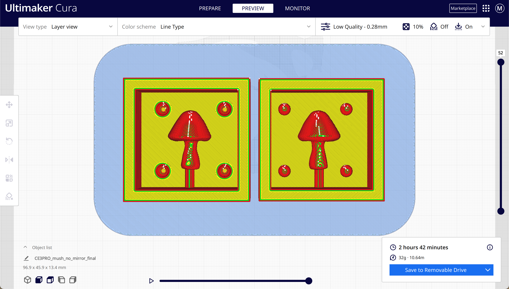
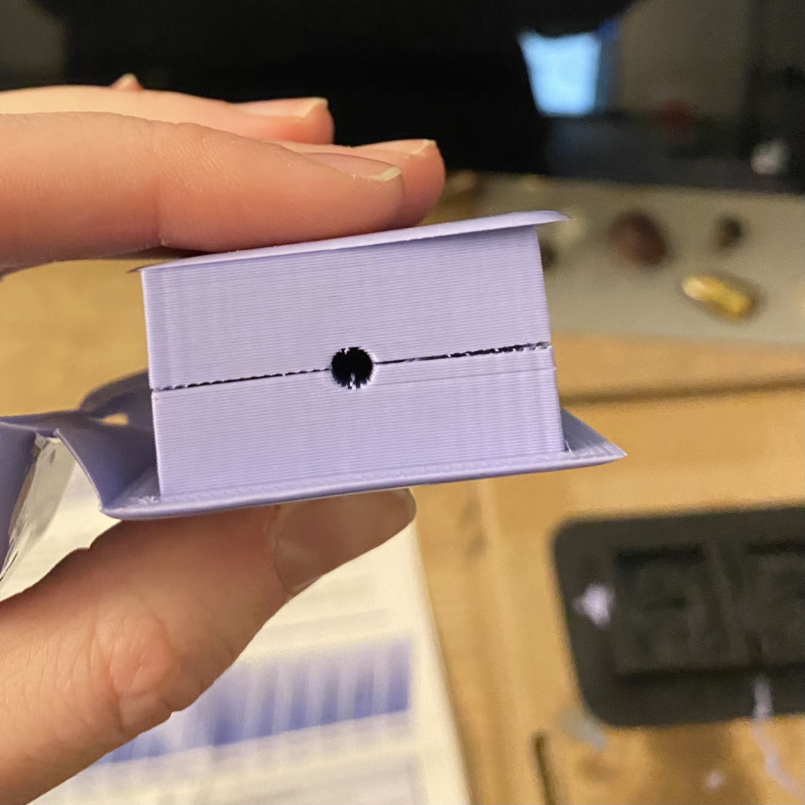
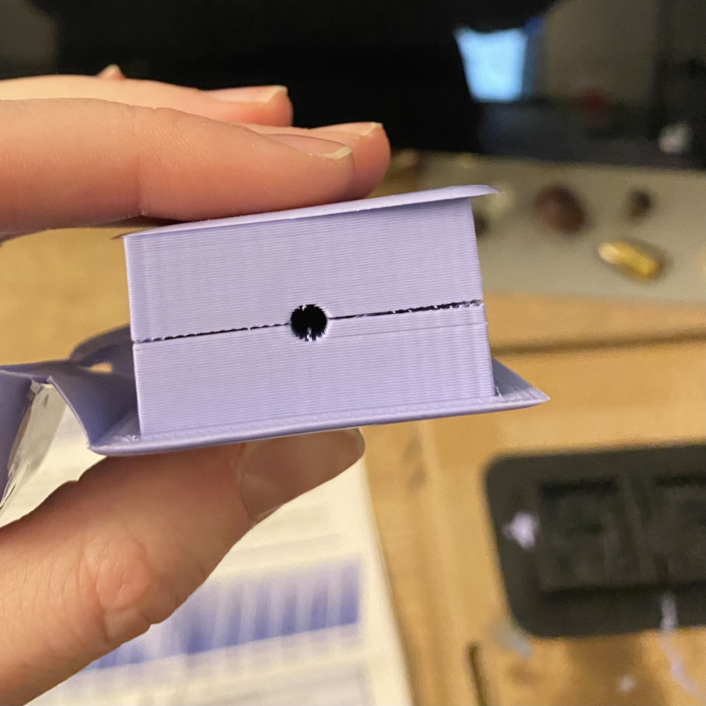

For this assignment, we needed to *finish* designing and fabricating a 2-part silicone mold, and use that mold to cast at least 4 identical parts in plaster, ice, or gelatin.
Not gonna lie, I had some misadventures. I thought I wanted to use resin and ordered a combo pack of some off-brand silicone and epoxy on Amazon...then the internet started targeting me with content on people having respiratory failure from working with resin and I took that as a sign to return those immediately and buy the recommended materials for class instead (OOMOO 30-1A:1B Mix by Volume Tin Cure Silicone Rubber and Perfect Cast Cast & Paint Harder Than Plaster Casting Material). Unfortunately, those didn't arrive until Saturday, and when I finally cast the silicone mold, the pour vent wasn't lined up. It took a minute to identify where I'd gone wrong in GH, but when I saw it, boy did I feel like a dummy. I'd added one final step to mirror across the z-axis that I thought just flipped the half mold so I wouldn't have to rotate it in Cura, but it was actually mirroring it (duh) and messing up the alignment of the registration points.


Once I fixed the GH script, I printed the new mold version in a little under 3 hours and cast a new silicone mold by mixing equal parts A and B OOMOO, stirring vigorously for 3 min, pouring it into the PLA mold, and letting it cure for 6 hours. And it fit this time! WoooOo!
 

I also printed a spiralized outer contour to hold the mold upright while the plaster cured. Then I got impatient and didn't want to waste a bunch of plaster, so I printed another spiralized outer contour to see if I could also cast plaster in the imperfectly fitting silicone mold by shoving it into the holder and forcing the pour vent to align (and it actually did - you'll see!).

I placed the silicone molds with the pour vents facing up in the printed contours and secured the top with a rubber band. I then cast the mushies by combining 3 parts Perfect Cast with 1 part water, mixing the solution with purpose for 2 min, pouring it into the silicone mold pour vents (very messily), then letting them cure for 45 min. Over and over again.
I've made 7 in total so far. Are they flawless and perfectly identical? Of course not, you masochist. But their lil wrinkles and dips make them even more adorable and now I can hide teeny shrooms around my friends' homes like the sneaky woodland elf I was always destined to be. (Or make a bunch, paint em, and throw em in with music merch! Or both!)